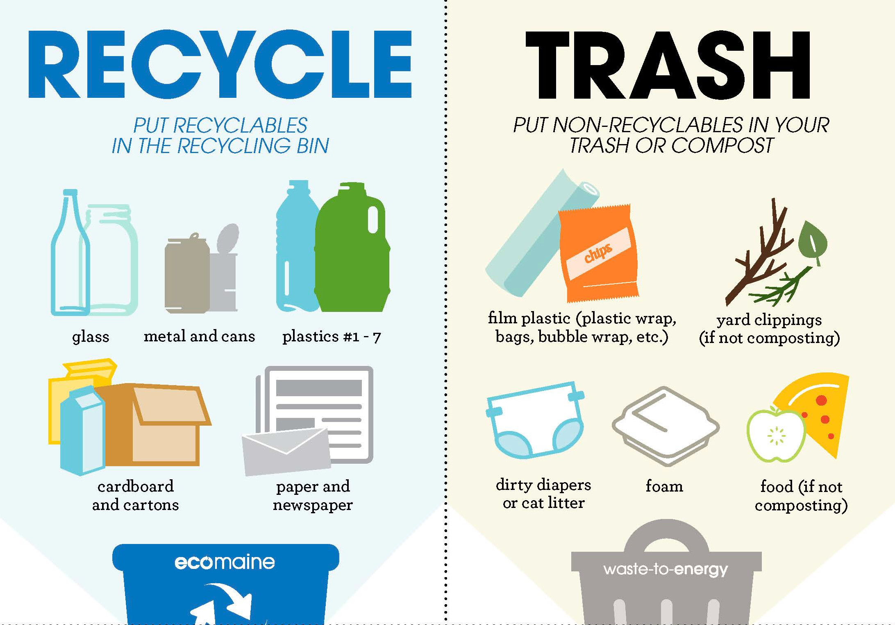
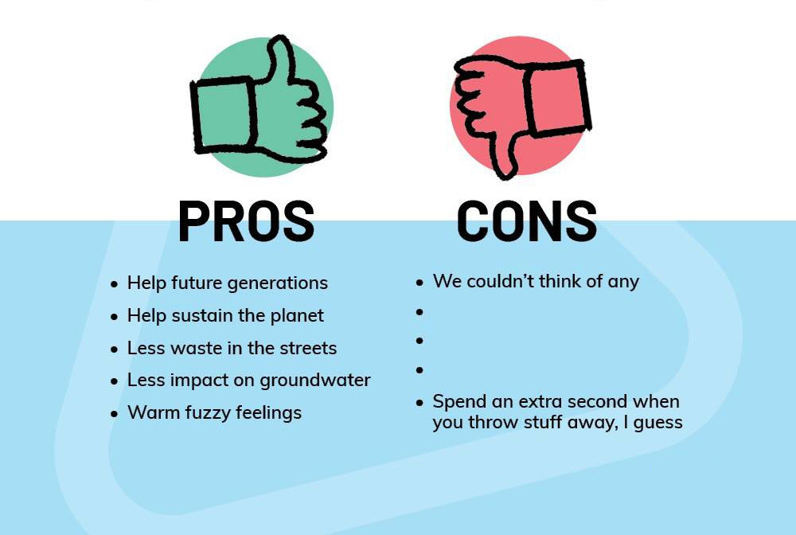

What is Recycling
Recycling is the process of collecting and processing materials that would otherwise be thrown away as trash and turning them into new products. Recycling can benefit your community, the economy and the environment.
Steps to Recycling Materials
- Step 1: Collection and Processing
- Step 2: Manufacturing
- Step 3: Purchasing New Products Made from Recycled Materials
Common Recyclables

- Cardboard
- Paper
- Food Boxes
- Mail
- Beverage Cans
- Glass Bottles
- Batteries
- Plastics
- Glass
- Used Oil
- Household Hazardous Waste
- Tires
Why Should We Recycle

Recycling Conserves Resources
When we recycle, used materials are converted into new products, reducing the need to consume natural resources. If used materials are not recycled, new products are made by extracting fresh, raw material from the Earth, through mining and forestry. Recycling helps conserve important raw materials and protects natural habitats for the future.
Recycling Saves Energy
Using recycled materials in the manufacturing process uses considerably less energy than that required for producing new products from raw materials – even when comparing all associated costs including transport etc. Plus there are extra energy savings because more energy is required to extract, refine, transport and process raw materials ready for industry compared with providing industry-ready materials.
Recycling Helps Protect the Environment
Recycling reduces the need for extracting (mining, quarrying and logging), refining and processing raw materials all of which create substantial air and water pollution. As recycling saves energy it also reduces greenhouse gas emissions, which helps to tackle climate change. Current UK recycling is estimated to save more than 18 million tonnes of CO2 a year – the equivalent to taking 5 million cars off the road.
Recycling Reduces Landfill
When we recycle, recyclable materials are reprocessed into new products, and as a result the amount of rubbish sent to landfill sites reduces.